Освоить создание, настройку и администрирование RAID-массивов при помощи утилиты mdadm в Linux.
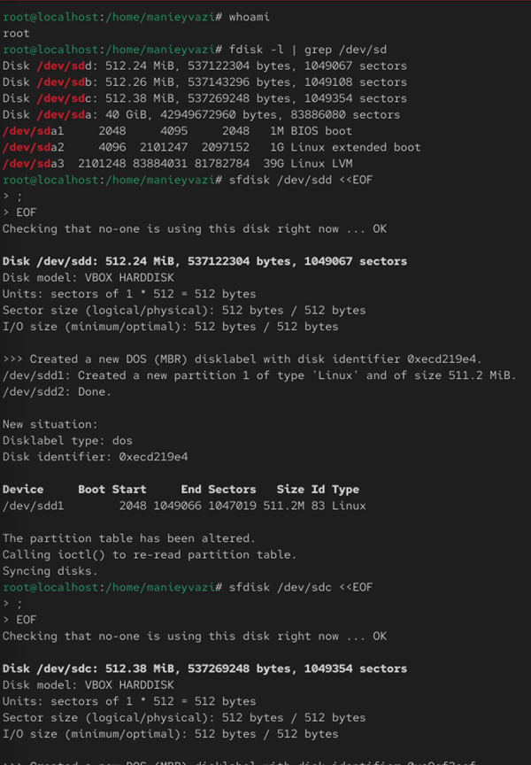
Рис. 1 — Проверка дисков
-.
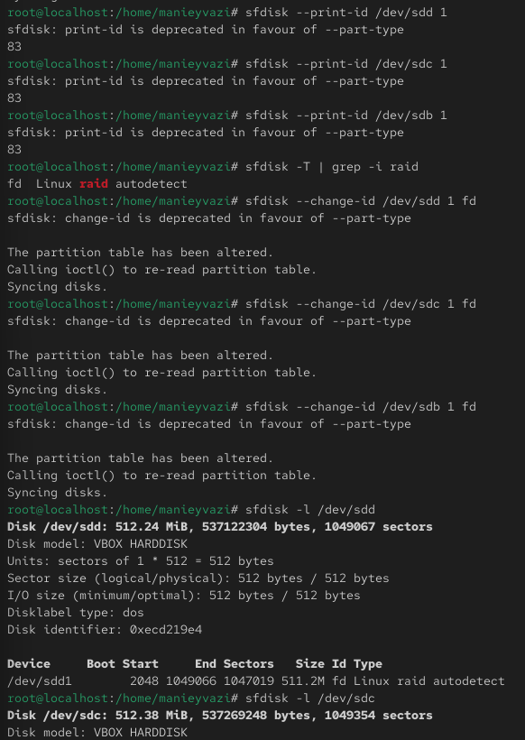
Рис. 2 — Типы разделов и изменение типа на RAID
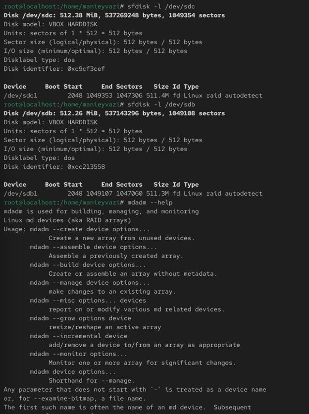
Рис. 3 — Разделы типа fd (Linux raid autodetect)
-.
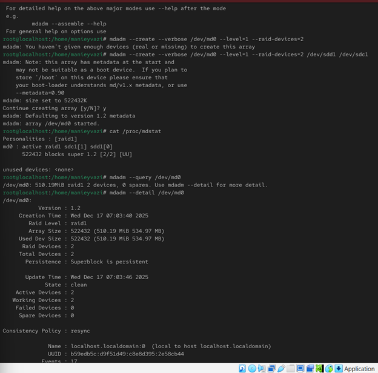
Рис. 4 — Создание RAID1
-.
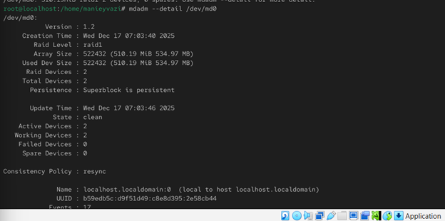
Рис. 5 — Информация о RAID1
-.
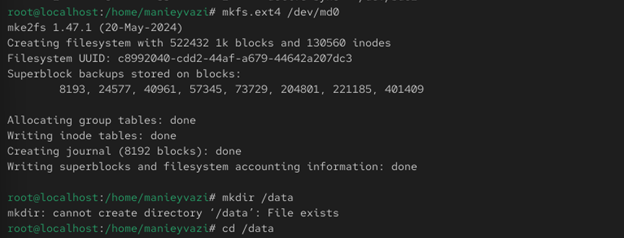
Рис. 6 — Создание ext4 и монтирование
-.
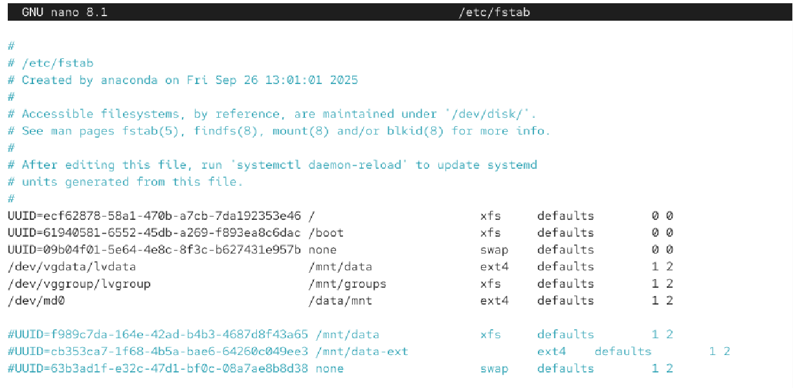
Рис. 7 — fstab запись
-.
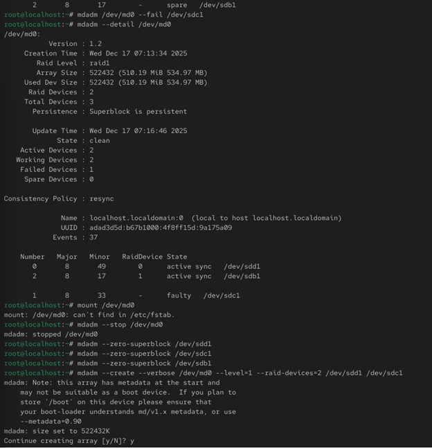
Рис. 8 — Сбой и удаление устройства
Проверка работы системы.
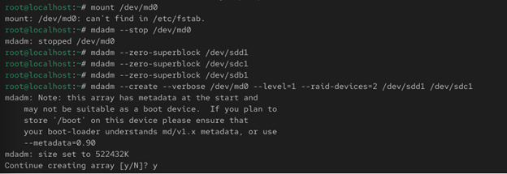
Рис. 9 — Остановка и очистка суперблоков
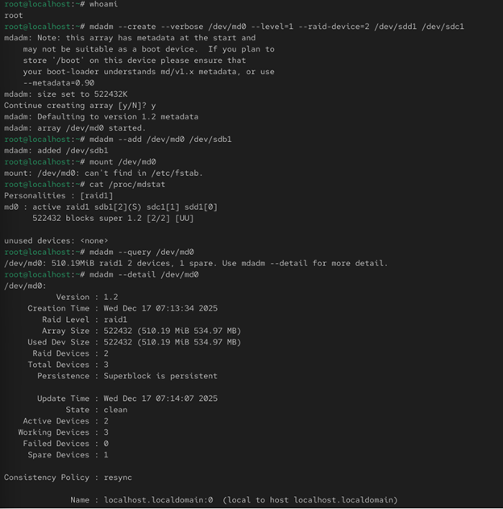
Рис. 10 — Hot spare добавлен
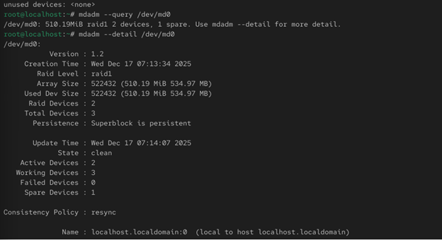
Рис. 11 — Состояние RAID с hotspare
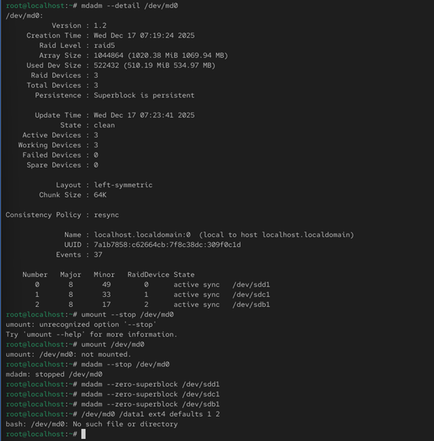
Рис. 12 — Активация резервного диска
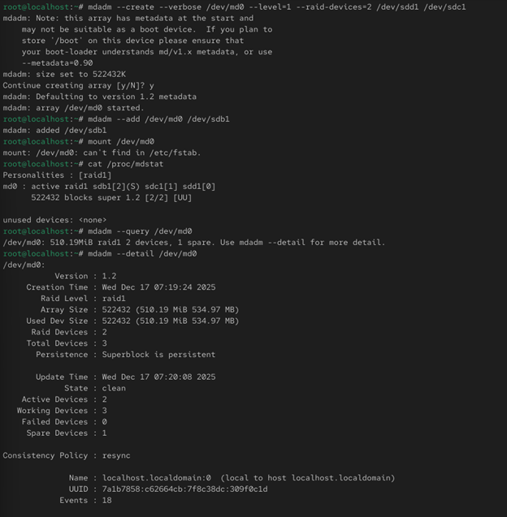
Рис. 13 — Перед преобразованием
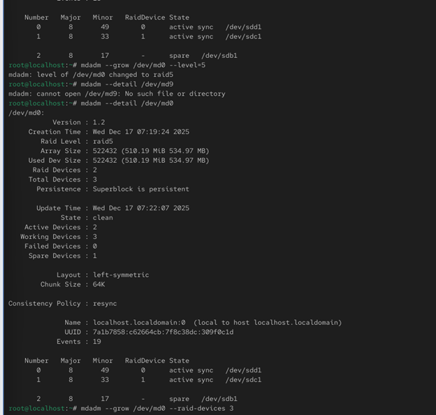
Рис. 14 — Состояние RAID перед изменением
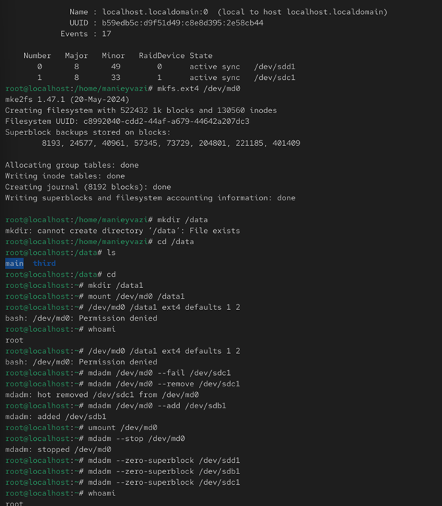
Рис. 15 — Преобразование в RAID5
Рис. 16 — Итоговый RAID5
В ходе работы были изучены принципы создания и администрирования RAID-массивов в Linux. Созданы и протестированы конфигурации RAID 1, RAID 1 с hot spare, а также выполнено преобразование массива RAID 1 в RAID 5 и расширение его состава.